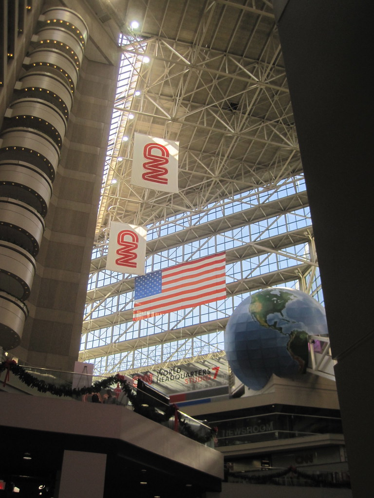

Jay'la Evans
I grew up in Bronx, NY but I have lived in South Carolina since attending high school. There is where I gained my love for basketball and soccer. I played all four years of high school. I have always enjoyed being apart of the team, but as I grew I wanted to connect with the sports on a different level and being a sports broadcaster could be the right answer.
Objective
Searching for a job working in Sports Broadcasting to where I can broaden my knowledge on working with athletes and gathering information to report on them.
Education
University of Miami- Miami, Coral Gables, FL
Bachelor in Broadcasting Journalism
Skills
- Gathering information on sports/athletes
- Preparing articles engaging in highlights of sports games
- Asking athletes questions to gain more information
- Broadcasting in front of a camera for live feedback
Work Experience
ESPN
I would interview athletes after games to get the inside scoop on their pre-game regimines.
Click here to go to ESPN.comCNN
I was assigned to write breaking news stories on athletic scandals. Some time I would report on them; sometimes I would just work behind the scenes.
Sports Illustrated
I was the Editor in Chief for the magazine so I would oversee every copy of the latest story someone would write and critique it.
Click here to go to Sports Illustrated.com
Hobbies/Interests
- Basketball
- Soccer
- Writing
- Cooking
- Watching the WNBA
- SNEAKERS!!!!
Address
1239 Dickinson Dr.| Job | Start | End |
|---|---|---|
| ESPN | 10/12/2013 | 01/05/2015 |
| CNN | 01/10/2015 | 06/18/2016 |
| Sports Illustrated | 06/21/2016 | Present |